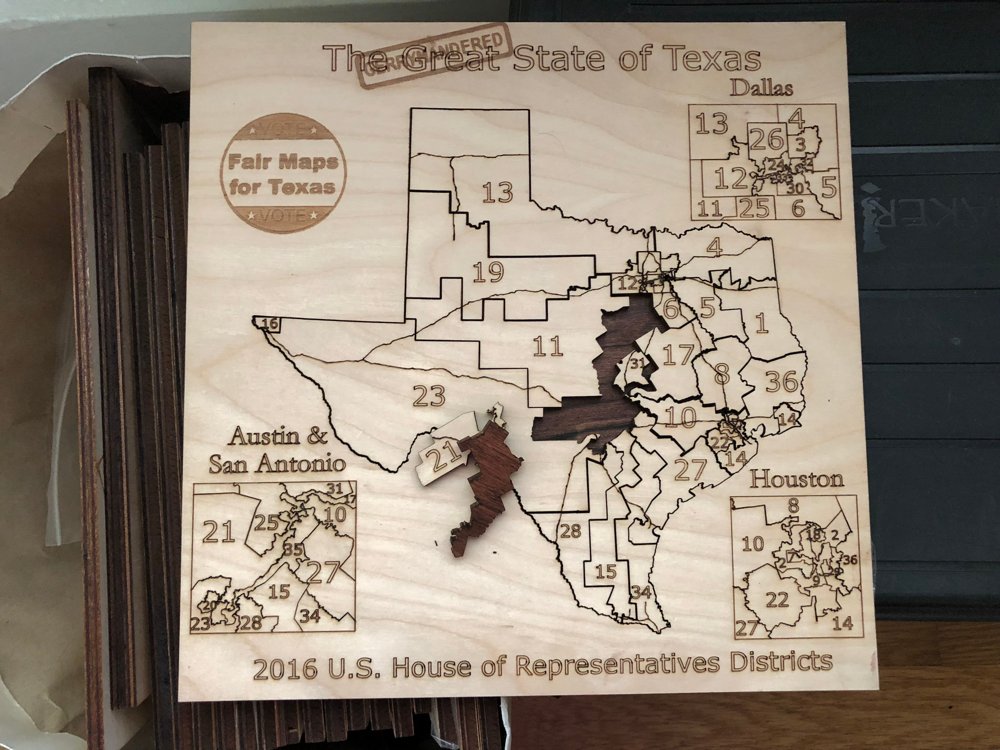
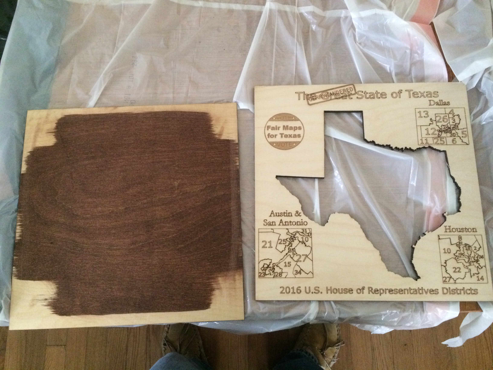
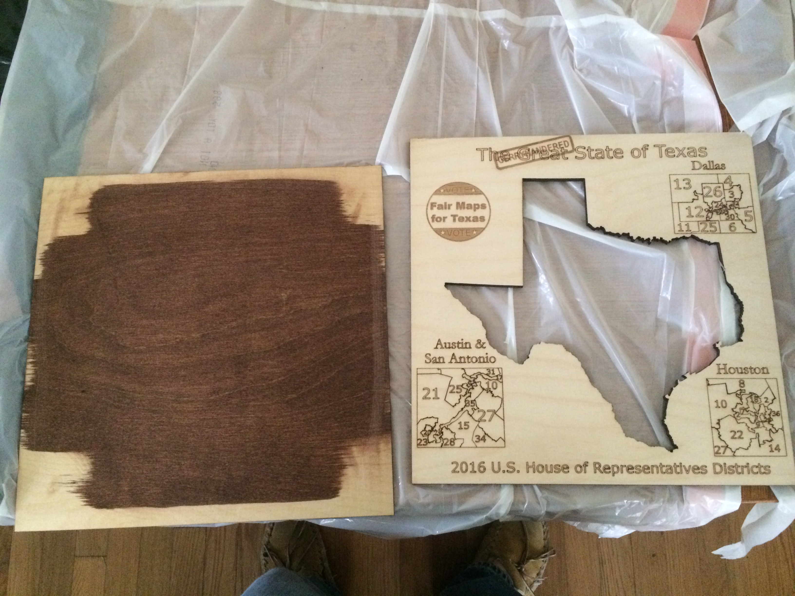

This is a "How-To" for creating a jigsaw puzzles using a laser cutter.
My puzzles had a purpose. I am strongly against gerrymandering and I wanted a piece of schwag for politicians to keep on their desk to remind their visitors — and themselves — about gerrymanding. I came up with the idea of a jigsaw puzzle of the state, where the odd-shaped pieces would remind everyone how gerrymandered Texas was. With Erik Furton, from the University of Texas, we designed the puzzle and built it 30+ copies of it.
Erik Furton handled the lasercutting and the files that went with it. The lasercutter's software required SVG files and we were very lucky to find a map of Texas's U.S. Congressional Districts in that format. He used the open-source tool Inkscape to edit the map.
We did run into some issues.Erik wrote up what he did to make the files for the lasercutter. Those instructions are available HERE.
Erik files are HERE (SVG) and HERE (XPS).
You'll need:
The 1/4" (6mm) plywood is used for the face of the puzzle. For that, we used nice stock, "Columbia Forest Products PureBond Plywood Project Panel" in birch. The 1/8" (3mm) plywood is used for the back and we just used standard plywood. For the stain, I had some "Red Oak" but any dark stain should work. Total cost, without shipping, for 20 puzzles was $90.
Steps:
Our puzzle was 11"x11" (28cm x 28cm). I cut the plywood into pieces that were roughly 12"x12" (30cm x 30cm).
The lasercutter was used to cut the plywood down to the exact size of 11"x11" (28cm x 28cm)
I stained one side of each piece of plywood. These sides would become the "inside" of the puzzle. I made sure to stain the "worst" side of the 1/4" (6mm) piece so that the good side become the front. You only need to stain where the puzzle pieces will be, but make sure you cover that area. Follow all instructions on the stain you get. Make sure it dries long enough and in a well ventilated area.
The lasercutter was used to cut the pieces of the front, as well as etch the titles, roads, numbers, logos and such that made up the map.
When the laser cutting is done, you need to keep the puzzle together. You want to not lose pieces and you want to make it easy to transport. We found the best was to put wide masking tape on the front side. (The backside will be glued to the 1/8" (3mm) plywood.)
 

Scuff the front and back where they will be glued. That is, where the puzzle pieces are not.
Glue the front to the back. Use very little glue - you don't want the glue to squeeze out when the weights are put on top. I put glue around the edge of the board and, carefully, a thin line near about 3/4" (2cm) from the puzzle pieces.
Now, we want to make sure glue sets with the puzzle flat. (The plywood is very thin and it's possible for the puzzle to curve or "separate" inside the puzzle.) Find a flat surface, put the puzzle on it, and weigh it down. Make sure to get all corners and the middle to rest on the flat surface. If any glue seeps out, wipe it up with a damp papertowel.
After a day or two, the glue dries. (Check your glue to see how long it takes to set.) At that point, you have a puzzle! I recommend checking the pieces, to make sure none or broken and that none have been glued to the backing! I removed the masking tape and wrapped the puzzle in clear plastic wrap (the kind I use for leftovers in the kitchen). It's not fancy, but people can see the puzzle with its pieces clearly.
My organziations, Fair Maps Texas uses the puzzles for two purposes. The first is as gifts to speakers at our events and to people who have helped the fight against gerrymandering. The other use is to sell them as fund raiser. We can sell a bunch of them at $20 a piece. Given our costs (so far) have been $5 a piece, we make a nice revenue from them.
Good luck. And if you'd like to help the fight against gerrymandering, you can donate to Fair Maps Texas HERE.
Mike
{kind=link}